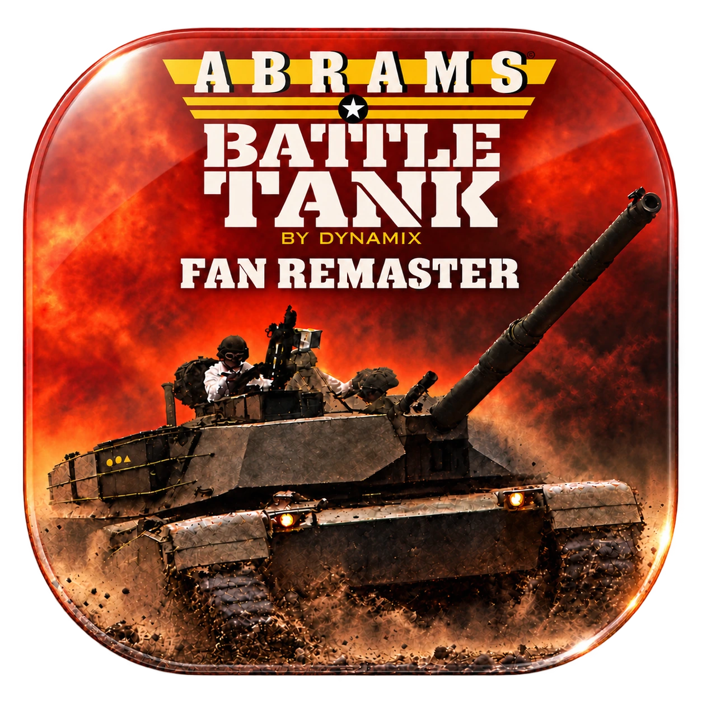

The Mossel Defense
Soviet forces have broken Allied defenses and approach the Mossel River in successive waves.
ObjectiveSurvive and destroy every attacking Soviet vehicle.

ABRAMS FAN REMASTERBack in the commander’s seat.
Dynamix’s classic tank simulation, restored in high resolution. New artwork and audio. The original PC game at its heart.
Original game by Dynamix
Published by Electronic Arts
Requires your own copy of the original PC game.
Fan Remastered by Nell Watson

Watch the one-minute trailer. Restored crew, familiar instruments and a new view of the battlefield.
Four crew. One tank. Your command. Abrams Battle Tank by Dynamix was a revolution for its time. Now, it's back! Scan the horizon, work the terrain, and hold your crew together when the shells start landing. Restored artwork. Reconstructed lettering. A choice of visual styles, including the one you first played. New sound effects and expressive crew voices bring every station to life. [Commander] T-72 destroyed. [Gunner] On the way! [Loader] Up! [Driver] Engine is overheating Underneath, the original game still calls every hit, every loss and every step of the campaign. On top, a tandem remaster in a new engine, linked directly to the old one, gives it a modern spit-shine. Save states mean one bad engagement no longer costs you the whole campaign. Fast-forward functions keep you engaged through the quiet parts. The remaster is free and open. Just bring your own copy of the original PC game, then button up!
From the Colonel’s office to the gunner’s instruments, the artwork and lettering keep the character of the originals.

The remastered artwork in high resolution, with carefully rebuilt lettering. Upscaled is the game’s default graphics mode.
The original simulation runs in tandem with Godot. Missions, aiming, damage and vehicle behaviour remain with the PC game, while the remaster handles what you see and hear.
Switch graphics immediately during play, including the experimental Modern mode.
Restored crew portraits, gauges and ammunition displays, with an optional Modern battlefield built around the original geometry.


The original scenarios, with freshly refined maps from the manual. Clear lettering, rich river blue and the familiar terrain, ready for your next briefing.

The fan remaster is free. Bring your own supported copy of the original PC game. A Genesis ROM is optional; neither game is included.
macOSApple Silicon, macOS 14+
Windows & LinuxNative x86_64 portable apps, Alpha 0.1.0-alpha.4
The macOS alpha is ad-hoc signed and has not been notarized by Apple. Windows is unsigned. These are early test releases; see each release’s installation notes.
Open the GitHub repository or download the source ZIP.
macOS DOSBox-Pure source · Windows DOSBox-Pure source · Linux DOSBox-Pure source
Extract your platform’s ZIP. On macOS, move Abrams.app to Applications. On Windows, open M1 Abrams Battle Tank Fan Remaster.exe. On Linux, run M1 Abrams Battle Tank Fan Remaster.sh. Godot and Python are included.
Choose the extracted folder containing ABRAMS.COM, SIM.EXE and the remaining original game files. The importer leaves your originals unchanged.
Import your Genesis ROM to enable its donor artwork and music. The PC game is still required.
Click Play Abrams. The original game supplies the simulation, and the remaster supplies the presentation.
Original game by Dynamix.
Published by Electronic Arts.
Copyright 1988, 1989 Dynamix, Inc.
Fan Remastered by Nell Watson
Dedicated to the memory of